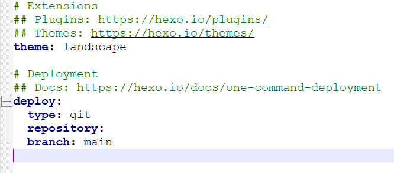

利用Hexo搭建个人博客
1.环境及工具准备
需要安装git和nodejs
安装完成后打开cmd控制台，输入命令npm install hexo-cli -g，安装Hexo
2.仓库搭建
进入github网站后，点击创建仓库create repository
仓库名字最好是用户名+.github.io,设置为公开仓库，公选设置生成readme文件
3.配置ssh key
回到桌面右击鼠标选择G0it Bash Here
在命令行中输入：ssh-keygen -t rsa -C "邮箱地址"
后面提示一直按enter回车键就行
之后进入本地磁盘C:\Users\用户名字\ .ssh
打开.pub文件，将里面的内容复制
之后回到github网站页面，点击右上角头像，选择setting，之后再点击ssh and gpg keys,然后再new ssh key

之后标题任意，把复制的ssh key粘贴在key填写框中
然后点击创建add ssh key
回到git命令窗口，输入ssh -T git@github.com，出现下方提示就成功了
4.本地部署
先在本地磁盘上创建一个文件夹，用于存放博客数据，这里我选择创建的是D:\BlogkFile目录
然后在此目录下右击鼠标选择git bash here
在命令窗口输入：hexo init 进行初始化
npx hexo install 安装
npx hexo g 生成
npx hexo s 本地部署
最后命令窗口会有一个链接，打开就可以进入本地部署的hexo了
ctrl+c 停止本地服务器
5.上线博客
打开文件夹中的config文件
复制这段文字：
type: git
repository:
branch: main
将它粘贴在config文件下面，将原来底部的type：‘ ’替换掉

之后回到github网站，回到自己的仓库，点击code复制git链接
将链接粘贴到config文件中的repository：旁边
保存退出，然后在本地博客文件夹中git bash here，输入命令npx hexo g，npx hexo g上传
$ npx hexo d
INFO Validating config
ERROR Deployer not found: git
如果出现这个问题，在bash界面输入npm install hexo-deployer-git –save后再输入npx hexo d即可解决
注意第一次使用要填写git邮箱与用户名字
然后结束后会弹窗，登入即可
网站资料
我们的博客标题还是默认的hexo，整个页面是初始默认的，接下来我们对其进行修改
用记事本打开我们blog文件夹中的_config.yml文件
将#Site下面按自己的需求填上
## Site |
然后保存
如何上传文章
我们在Blog文件夹中打开git bash,输入下方代码就可以生成新的文章md文件
hexo new 文章标题 |
文章是.md格式，在我们的Blog文件夹中的source/_posts中
推荐用Typora软件来编辑.md格式的文件
然后我们用Typora软件打开该.md文件就可以开始写文章了
写好以后，我们还是一样打开git bash生成、上传
hexo g |
至此，我们就成功搭建好基本的博客了，剩下的就是对博客的一些优化和美化了。
相关问题解决
网络问题
这个错误 fatal: unable to access 'https://github.com/mingea/mingea.github.io.git/': OpenSSL SSL_read: Connection was reset, errno 10054 是一个典型的 网络连接问题，通常是 GitHub 连接被重置导致的。
步骤：
生成 SSH 密钥（如果你还没有）：
bash
ssh-keygen -t rsa -b 4096 -C "your_email@example.com"
直接按回车使用默认路径和空密码。
将公钥添加到 GitHub：
- 复制公钥内容：
cat ~/.ssh/id_rsa.pub - 登录 GitHub → Settings → SSH and GPG keys → New SSH key
- 粘贴公钥内容
- 复制公钥内容：
修改部署配置：
将_config.yml中的 repository地址改为 SSH 格式：yaml
deploy:
type: git
repository: git@github.com:mingea/mingea.github.io.git
branch: main测试 SSH 连接：
bash
ssh -T git@github.com
如果显示 “You’ve successfully authenticated”，说明配置成功。
重新部署：
bash
npx hexo clean && npx hexo g && npx hexo d
图片加载问题
- 进入你博客的根目录，然后下面顺序找到
index.js:node_modules–>hexo-asset-image–>index.js - 用VS Code 或者 记事本打开
index.js - 在第 58 行，可以找到这么一行代码：
$(this).attr('src', config.root + link + src); |
- 把这一行代码改成下面这样
$(this).attr('src', src); |
- 保存文件
用法
- 进入博客的根目录
node_modules–>hexo-asset-image–> 打开README.md, 里面写了用法。我截了个图：

Usage of hexo-asset-image
注意
- 要先把
_config.yml中的post_asset_folder: false改成post_asset_folder: true(默认是false，如果你没有修改过，那请去修改) - 圆括号里面只要写 图片名.后缀 就可以了，不要多加任何的东西。
最后，hexo clean hexo g hexo s 三部曲，然后进入浏览器打开localhost:4000 就可以看到你想要的图片.